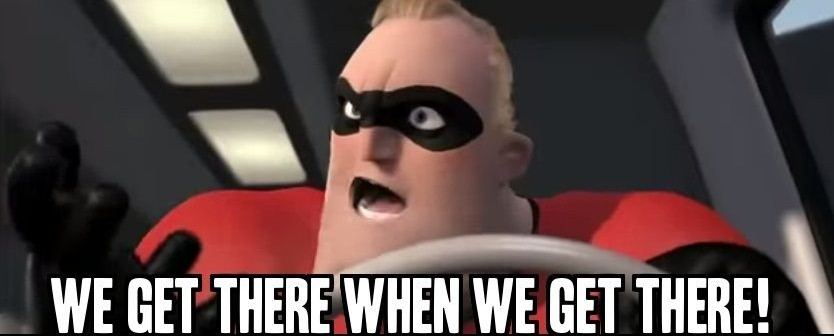

Q: White Screen
A: Visit the website instead of displaying it in a embed. This could also be a issue with your browser, internet or device.
Q: Game is slow/unresponsive
A: Get out of McDonalds and go to Wendys. At least they have a better connection.
Q: When are you gonna port new games to JavaScript / When is Mobile Support releasing?
A:

Q: Is the code stolen?
A: Kinda. The code for the ROM is from @n64decomp on GitHub and then the player was built using Emscripten. You expect me to write the SM64 Game along with thousands of lines of code from scratch? No.
Q: How do I play?
A: Read the controls page. You play it the way you play it on a Nintendo 64.
Q: What happened to the old design where it was just "Click to Start, Made by TWTG"?
A: The page was lazy. I wanted more effort. Friend quit so I am continuing the project.
Q: This game sucks
A: I̶͇͋ ̴͚͒k̴̖̀n̸̻͊o̴͈̒w̴̬͠ ̵̩̈w̵̤̃h̴̫͠e̷͎̅ŗ̶̿e̷͚͝ ̴̝̋ÿ̷̤́õ̵̼u̸͉͋ ̶̭̀l̸̢̒ì̴͓v̴̫̊e̷̩̐